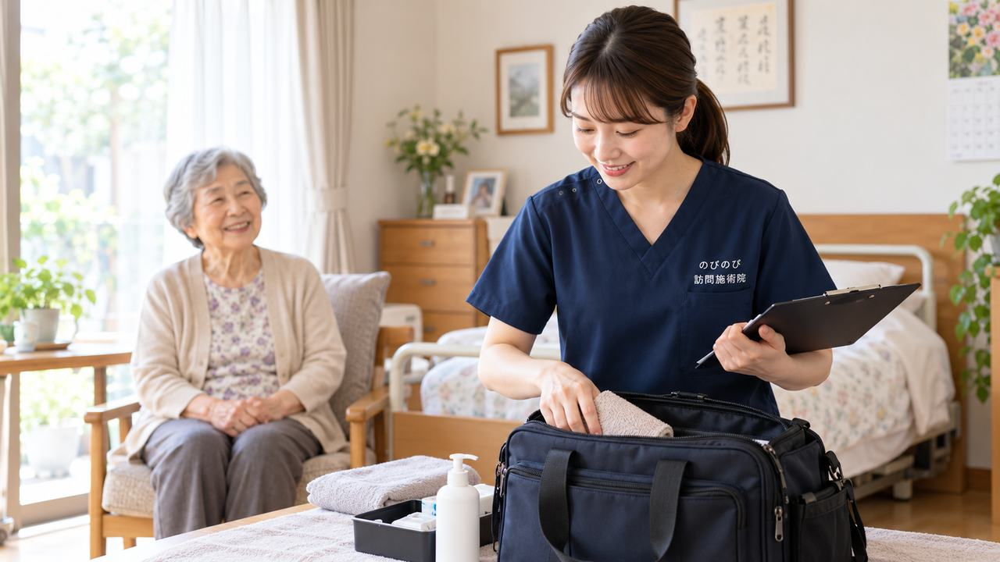

「鍼やお灸に医療保険が使えるとは思っていなかった」と、初めてお会いしたご家族に驚かれることがよくあります。けれど医師が治療の必要を認めた慢性的な痛みなどには、公的な医療保険（療養費）を使って施術を受けられます。市販の湿布や痛み止めでしのぐうちに、気づけば何か月も同じ痛みとつきあっていた、という方は珍しくありません。ここでは、保険の対象としてよく名前が挙がる代表的な6つの症状と、実際の自己負担がいくらになるのかを、順に整理します。
先に結論を書きます。医療保険の対象になりやすいのは、坐骨神経痛などの神経痛、リウマチ、頸肩腕症候群、五十肩、腰痛症、頸椎捻挫後遺症の6つが代表例です。ただし対象はこの病名に限られず、慢性的な痛みやしびれ、麻痺にともなうこわばりについて医師の同意があれば相談できます。自己負担は総額3,950円のうち、1割の方でおよそ395円、2割で790円、3割で1,185円が一回の目安。要介護認定は不要で、介護保険の限度額とは別の枠です。効果には個人差がありますが、家で受けられるので通院の負担がありません。
はり・きゅうの保険は、まず「6つの疾病」が目安になる
はり・きゅうの療養費で医療保険が使えるかどうかは、症状の名前だけで決まるわけではありません。ただ、実際に対象として案内されることが多い代表的な疾病が6つあります。神経痛、リウマチ、頸肩腕症候群、五十肩、腰痛症、頸椎捻挫後遺症。この6つが、いわば入口の目安です。慢性的な痛みで、医師が施術の必要を認めていること。そこが前提になります。自分の症状が当てはまりそうか、ひとつずつ見ていきましょう。
神経痛（坐骨神経痛など）
神経の道すじに沿って走るような痛みやしびれが、神経痛の特徴です。おしりから太もも、ふくらはぎへと電気が走るように痛む坐骨神経痛は、その代表格。歩いている途中で足がしびれてくる、夜になると痛みが気になって眠りが浅い、そうした訴えも含まれます。原因や部位は人によってさまざまで、感じ方にも個人差があります。神経痛については神経痛は保険で受けられる？でもう少し詳しくまとめています。
リウマチと頸肩腕症候群
関節リウマチによる痛みやこわばりも、対象となる疾病のひとつです。朝、手指がこわばってうまく動かない、天気が崩れる前に関節が重だるくなる。そうした慢性的なつらさが続いているケースが想定されます。
頸肩腕症候群は、首や肩から腕にかけてのこり・痛み・しびれをまとめて指す言葉です。長年のデスクワークや加齢による筋肉のこわばりから、腕の重さや疲れやすさが抜けなくなることがあります。首から腕まで、ひとつながりのつらさとして現れるのが特徴です。
五十肩と腰痛症
五十肩は、正式には肩関節周囲炎と呼ばれます。肩が痛くて腕が上がらない、服の着替えや髪を洗う動作がつらい。日常のちょっとした動きが、そのまま負担になってしまう状態です。
腰痛症は、慢性的に続く腰の痛みを指します。立ちっぱなしや歩行でつらくなる、朝起きたときに腰が固まって動きにくい。原因がはっきりしないまま長く付き合っている方もよくいらっしゃいます。こうした慢性の腰痛が、対象として案内される場面は多くあります。
頸椎捻挫後遺症（むち打ちの後遺症）
交通事故などのあとに残る首や肩の痛み、しびれ、頭の重さ。これが頸椎捻挫後遺症、いわゆるむち打ちの後遺症です。事故そのものは落ち着いても、首肩の不快感だけが長く尾を引くことがあります。急性期を過ぎて慢性的なつらさとして残っている段階が、対象として考えられる範囲です。
6つに当てはまらない症状はどうなる？
ここが多くの方の気になるところだと思います。膝の痛みや変形性膝関節症、脊柱管狭窄症、手根管症候群、帯状疱疹後神経痛。これらは6つの正式名称そのものではありません。ただ、対象外と決まっているわけでもないのです。医師が神経痛などとして施術の必要を認めた場合には、対象になりうるものがあります。たとえば脊柱管狭窄症にともなう足のしびれを神経痛として扱う、といった形です。判断するのは医師なので、まずは今の症状を具体的に伝えてみてください。急に始まった強い痛みや原因のはっきりしない不調は、先に医療機関での診断が必要になります。
料金の目安と、自己負担額
気になる費用の話です。1回あたりの施術の総額は3,950円。ここに医療保険が使えるので、お支払いは負担割合の分だけになります。1割負担の方でおよそ395円、2割負担で約790円、3割負担で約1,185円が1回あたりの目安です。週2回のペースで受けた場合、1割負担なら月に約3,160円ほど。介護保険の支給限度額とは別枠なので、限度額を使い切っていても影響しません。金額は割合や回数で変わるため、仕組みそのものは料金はいくら？医療保険の自己負担額と仕組みもあわせてご確認ください。
受けるために必要なことと、知っておきたい点
保険で受けるには、医師の同意書が前提になります。慢性的な痛みについて、施術が必要だと医師が認めたことを示す書類です。要介護認定は必要ありません。要支援でも、認定を受けていない方でも、同意書があれば対象になります。関節の動きを保つための機能訓練は、鍼灸に加えるケアとして行っています。これらについて別途の料金はいただきません。ひとつ注意しておきたいのは、同じ部位について医療保険のリハビリを受けている場合、はり・きゅうと同時には算定できないという点です。部位を分ければ併用できることもあるので、通院先がある方は事前にお伝えください。なお、はり・きゅうは慢性的なつらさをやわらげ、日々の生活を支えていくためのもので、病気そのものを治すものではありません。効果の出方には個人差があります。その前提のうえで、無理なく続けられる形を相談しながら決めていきます。
よくある質問
6つのどれにもぴったり当てはまらない気がします。それでも受けられますか？
6つは代表例で、診断名がこれに限られるわけではありません。これ以外でも、医師が必要と認めた慢性的な痛みやしびれであれば対象になることがあります。まずは体の状態をお聞かせください。対象になりそうかを確認できます。
複数の症状が重なっている場合はどうなりますか？
たとえば腰痛症と神経痛の両方がある、頸椎捻挫後遺症と五十肩が重なっている、といった場合も、医師が治療の必要を認めていれば対象になります。伺ったときは、痛む場所だけでなく体全体の状態を見ながら、その日の様子に合わせて進めます。
結局いくらかかりますか？
訪問で一人が受ける場合、総額3,950円のうちの自己負担分だけをお支払いいただきます。1割の方でおおよそ1回395円、2割で790円、3割で1,185円が目安です。別途の出張費はかからず、エリア内は同額です。
要介護認定を受けていないと使えませんか？
いいえ、要介護認定は必要ありません。医療保険（療養費）の仕組みなので、医師の同意があり、通院がむずかしい状態であれば利用できます。介護保険の区分支給限度額とも別の枠です。
同意書はどうやってもらえばいいですか？
かかりつけ医に書いていただく書類ですが、依頼の段取りからのびのびが進めます。ご家族が一から病院とやりとりする必要はほとんどありません。もし断られても、伝え方を工夫したり別の医師に相談したりで道が開けることもあります。
デイサービスやヘルパーを使っていても受けられますか？
受けられます。訪問鍼灸の費用は医療保険で計算するため、介護保険の限度額とは別の枠です。デイサービスやヘルパーの利用枠とは別に、あわせて受けていただけます。
施術で必ず痛みは楽になりますか？
効果には個人差があり、必ず楽になると言い切ることはできません。慢性的な痛みやしびれと無理なくつきあっていけるよう、その日の状態に合わせて施術します。気になることは遠慮なくお聞かせください。
支払いは毎回その場でしますか？
いいえ、お支払いは月ごとにまとめてです。どんな施術をしたかは、ご家族にもお伝えしています。内訳はあとからでも確認できます。
この記事の根拠
はり・きゅう、あん摩マッサージ指圧の療養費は、厚生労働省が定めた取扱いにもとづく制度です。制度そのものをご自身で確かめたいときは、厚生労働省の療養費について（新しいタブで開きます）をご覧ください。「被保険者のみなさまへ」の案内も、同じページからたどれます。